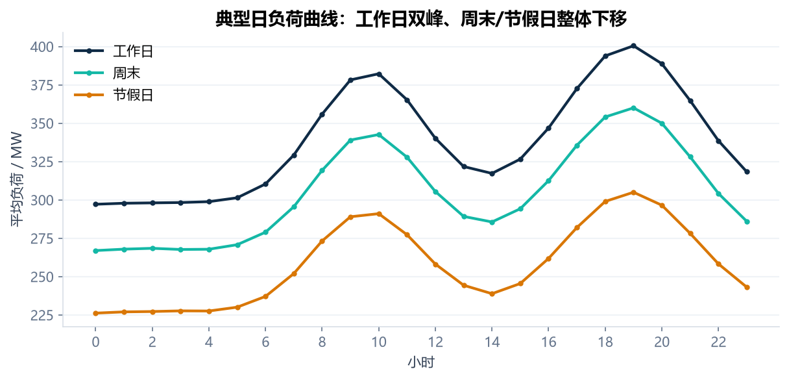
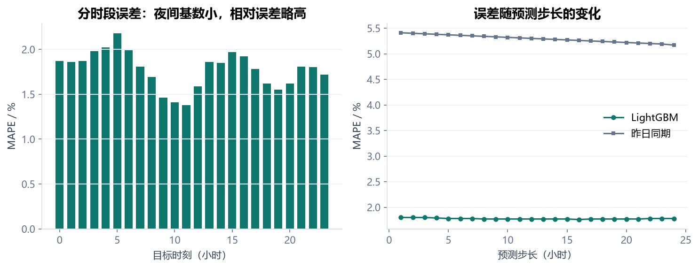
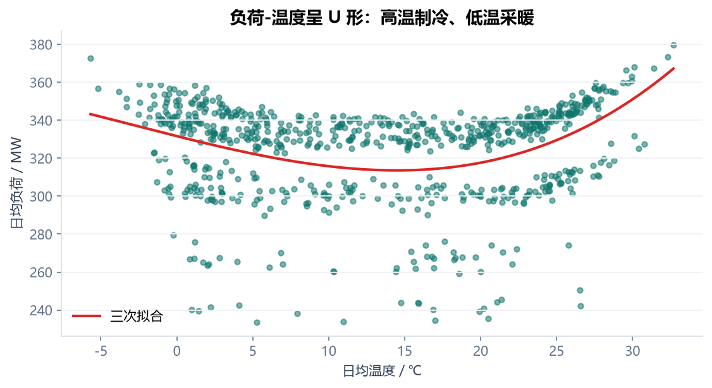

时序数据与机器学习基础
这一章只做一件事：让你看到一条负荷曲线时，脑子里能自动拆出趋势、季节、周期、残差，并且知道“预测”这件事到底在预测什么、怎么算才算公平。
特征＝用来判断的线索（输入）；标签＝要预测的答案（输出）；模型＝从线索到答案的公式。这三个词如果还陌生，先读 零基础补课 里的“机器学习 12 个词”，十分钟就够。
时序数据到底特殊在哪
普通表格的一行是一条独立样本：用户 A、用户 B 互不影响。时序数据不一样——相邻时刻高度相关，顺序不能打乱，而且“未来”在训练时拿不到。这三点决定了后面所有的处理方式。
① 有序
00:00 和 00:15 的关系，远比 00:00 和 13:45 近。打乱顺序等于毁掉信息。
② 自相关
上一刻的负荷是下一刻最好的预测因子。这也是“昨日同期”基线往往不弱的原因。
③ 不可回看
预测明天时，明天的温度、负荷都不存在。训练集里任何“未来信息”都会造成虚假的高分。
一条真实的负荷长什么样
下面是项目一生成的原始数据，两周一景。你可以先不看任何模型，只用眼睛找规律。

把一条曲线拆成四块
经典分解：观测值 = 趋势 + 季节 + 周期 + 残差。不用背公式，先理解每一块对应业务里的什么。
| 成分 | 是什么 | 在你的项目里对应什么 |
|---|---|---|
| 趋势 | 长期缓慢上升或下降 | 园区扩产、新增租户、设备老化导致的整体抬升或下滑 |
| 季节 | 固定周期重复的形态 | 日内双峰（24h）、周内工作日/周末（7d）、年度夏冬空调（365d） |
| 周期 | 非严格固定长度的波动 | 节假日、生产排班、订单季——知道有，但不好用固定正弦描述 |
| 残差 | 扣掉上面三项后剩下的随机部分 | 天气突变、临时加班、测量噪声。这部分才是“不可预测”的下限 |

is_weekend，它就能自己学出两组不同的曲线。它让你判断误差该归咎于谁。如果模型在趋势上偏了，多半是训练数据太旧；如果在日内形态上偏了，是特征没表达好；如果在残差上偏了，那可能是天气突变，属于正常不可控。不会分解的人，看到误差变大只会说“模型不行”。
采样、聚合与对齐
现实数据很少刚好是你要的频率。电表可能 1 分钟一条，结算要 15 分钟，预测要 1 小时。这三者之间的转换就是重采样。
| 操作 | 方向 | 该用什么聚合 | 典型错误 |
|---|---|---|---|
| 降采样（15min → 1h） | 变粗 | 功率用 mean；电量用 sum | 把功率求和，数值放大 4 倍 |
| 升采样（1h → 15min） | 变细 | 插值 / 前向填充 | 直接线性插值造出“看起来很真”的假峰 |
| 对齐多源 | 统一时间轴 | 按时间戳 join，允许容差 | 时区不一致，整体错 8 小时 |
| 补齐缺失时段 | 补全索引 | reindex 到完整频率 | 只 fillna 不补索引，缺口被“跳过”，滞后特征全错位 |
正确姿势是先建完整时间索引，再填值。否则 shift(1) 拿到的不是“上一时刻”，而是“上一条存在的记录”，在缺失时会悄悄错位。
# 1) 建完整索引：15 分钟一条，一天 96 条 idx = pd.date_range("2024-01-01", "2024-01-07 23:45", freq="15min") s = df.set_index("ts")["load_mw"].reindex(idx) # 2) 降采样：功率取均值，电量取求和 hourly_power = s.resample("1h").mean() hourly_energy = s.resample("1h").sum() / 4 # 15min 的 MW → MWh # 3) 短缺口插值，长缺口留空（后面用缺失标记） s_filled = s.interpolate(limit=8) # 最多补 2 小时 # 4) 滞后特征必须在补全索引之后做 lag1 = s_filled.shift(1) lag96 = s_filled.shift(96) # 昨日同一时刻
默认 mean() 不计 NaN。如果一小时里 3 个点缺失，剩下 1 个点也会被当成整小时均值，看起来“完整”，实际代表性很差。要同时看 count()，低于阈值（比如 3/4）就置空。
“预测”到底在预测什么
业务说“预测明天负荷”，技术上有四种完全不同的定义。定义不清，评估必然吵架。
按预测长度：超短期 / 短期 / 中期
超短期（分钟~小时）用于实时控制；短期（日前 24h）用于购电与调度；中期（周~月）用于检修与合同。本教程聚焦日前 24 小时。
按输出形式：点预测 / 区间预测
点预测给一个数；区间预测给“90% 概率落在 [低, 高]”。做需量控制时，上界比均值更有用。
按步长策略：直接多步 / 递归
直接多步：一个模型一次输出 24 个点（本项目把 horizon 当特征）。递归：预测 1 步，再拿预测值预测下一步，误差会累积。
按起点：滚动 / 固定
每天 0 点用当天已知信息预测未来 24h，叫日前滚动。要明确“预测时刻能拿到哪些数据”，否则就是泄漏。
“输入是预测起点之前 7 天的 15 分钟负荷、气象预报与日历信息；输出是未来 24 个小时的逐时负荷；评估用时间切分，主指标 MAPE，辅以 MAE 和峰段误差。”
指标：别只会说 MAPE
三个指标各有适用边界。面试官问“为什么不用 RMSE”时，你要能答出业务含义，而不是数学定义。
| 指标 | 计算 | 优点 | 陷阱 |
|---|---|---|---|
| MAE | 平均绝对误差，单位同负荷 | 直观：“平均差 5.76 MW” | 不区分大误差，对峰值不敏感 |
| RMSE | 均方误差开根号 | 惩罚大误差，适合安全/容量场景 | 单位不直观，易被少数极端点主导 |
| MAPE | 平均 |误差/实际| | 跨量级可比，汇报友好 | 实际值接近 0 时爆炸；低估与高估不对称 |
| WAPE | Σ|误差| / Σ|实际| | 不会被单点小值放大，适合总量考核 | 掩盖局部时段的严重偏差 |
夜间负荷可能只有 20 MW。此时差 2 MW 就是 10%，而白天 200 MW 差 2 MW 只有 1%。所以 MAPE 天然对谷段苛刻。本项目谷段 MAPE 2.01%、峰段 1.51%，并不是“谷段模型更差”，很大程度是指标本身放大了小基数误差。汇报时要把这点说清楚。
只看总体指标是不够的
一个模型总体 MAPE 1.78%，听起来很好。但如果它在每天 18:00 的晚峰系统性偏低 5%，业务依然会不满——因为峰段决定了需量和购电成本。所以必须做分组误差。

评估：时间切分与数据泄漏
这是新手最容易翻车的地方，也是最容易被面试官识破的地方。
✗ 随机切分（错误）
把 2 年数据随机打乱，80% 训练、20% 测试。结果：测试集里 10 月 1 日 10:00 的样本，模型在训练时见过 10 月 1 日 09:45 和 10:15。相邻点高度相关，等于抄答案。指标会好得离谱。
✓ 时间切分（正确）
按时间先后切：前 18 个月训练，中间 3 个月验证调参，最后 3 个月测试。测试集完全不参与任何决策。这样得到的指标才代表“面向未来”的真实能力。
train = df[df["origin_ts"] < "2024-07-01"] valid = df[(df["origin_ts"] >= "2024-07-01") & (df["origin_ts"] < "2024-10-01")] test = df[df["origin_ts"] >= "2024-10-01"] # 注意：切分依据是“预测起点时间”，不是目标时间。 # 否则同一次预测产生的 24 个样本会被拆到训练/测试两边，造成泄漏。
① 用目标时刻的气象实测值：预测明天却用了明天实际温度，实际只能拿到预报。② 用全量数据算标准化参数：均值/方差应该只用训练集算。③ 用未来的滞后值：比如把 shift(-1) 当成特征。写特征时养成习惯：问一句“这个数在预测时刻真的存在吗？”
一个必须亲手看的关系：温度 → 负荷
负荷不是随机的，它主要被人和天气驱动。温度与负荷的关系通常是一个“U 形”：太冷要供暖，太热要制冷，中间舒适区负荷最低。

temp、temp²、cooling = max(0, temp−26)、heating = max(0, 18−temp)，让树模型更容易切出非线性。最小机器学习工作流
把上面所有概念串起来，就是一个可复用的六步流程。项目一、项目二都是这个骨架。
读数据并建立时间索引
统一时区、排序、去重、reindex 到固定频率。这一步不做好，后面全错。
清洗与质量标记
缺失、越界、突变。决定哪些插值、哪些置空、哪些打标记。
构造特征与标签
特征必须“在预测时刻可知”；标签是未来值。逐行确认时间关系。
时间切分
训练 / 验证 / 测试按时间切。验证集只用于早停和调参。
训练与对比基线
至少两个基线：昨日同期、上周同期。模型赢不了基线，就没有上线价值。
评估、保存、解释
总体 + 分组指标、特征重要性、典型失败案例。保存模型与特征列顺序。
import pandas as pd, numpy as np from sklearn.linear_model import Ridge from sklearn.metrics import mean_absolute_error df = pd.read_csv("data/p1_load/load_15min_clean_truth.csv", parse_dates=["ts"]) s = df.set_index("ts")["load_mw"] h = s.resample("1h").mean() # 聚合到小时 X = pd.DataFrame({"lag1": h.shift(1), "lag24": h.shift(24), "lag168": h.shift(168), "hour": h.index.hour}) y = h d = X.assign(y=y).dropna() train, test = d[d.index < "2024-10-01"], d[d.index >= "2024-10-01"] m = Ridge().fit(train.drop(columns="y"), train["y"]) pred = m.predict(test.drop(columns="y")) print("MAE", mean_absolute_error(test["y"], pred)) print("MAPE", np.mean(np.abs(pred - test["y"]) / test["y"]) * 100)
这段代码不追求效果，只让你确认三件事：特征怎么来、切分怎么做、指标怎么算。项目一会在它基础上扩展到 25 个特征、24 个预测步长。
想找更多参考图，可以搜索这些关键词：typical daily load curve、seasonal decomposition time series、temperature load U-shape、peak valley pricing China。看图时问自己：这条曲线的拐点对应什么业务动作？
自测
- 说出趋势、季节、周期、残差在本项目里各指什么。
- 为什么 15 分钟功率聚合到小时要用 mean，而电度要用 sum？
- 为什么不能随机切分？举一个具体的时间点说明泄漏。
- MAPE 在什么情况下会失真？你会补什么指标？
- “日前 24 小时直接多步预测”是什么意思？和递归预测的区别？
- 如果模型总体 MAPE 很好但峰段偏差大，业务会怎么反应？